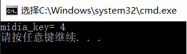

Median of Two Sorted Arrays
There are two sorted arrays nums1 and nums2 of size m and n respectively.Find the median of the two sorted arrays. The overall run time complexity should be O(log(m+n)).
- 中位数的概念
将一个集合划分为两个长度相等的子集，其中一个子集中的元素总是大于另一个子集中的元素。 - 将有序数组分成两部分，可以得到如下关系式:
| left_part | right_part |
|---|---|
| A[0], A[1], ..., A[i-1] | A[i], A[i+1], ..., A[m-1] |
| B[0], B[1], ..., B[j-1] | B[j], B[j+1], ..., B[n-1] |
len(left_part)=len(right_part)
max(left_part)≤min(right_part)
那么，中位数就是：
代码如下：int findMedianSortedArrays(int A[],int A_len, int B[],int B_len) { int m=A_len,n=B_len; int iMin = 0, iMax = m, halfLen = (m + n + 1) / 2; while (iMin <= iMax) { int i = (iMin + iMax) / 2; int j = halfLen - i; if (i < iMax && B[j-1] > A[i]){ iMin = i + 1; // i is too small,需要增大i，减小j } else if (i > iMin && A[i-1] > B[j]) { iMax = i - 1; // i is too big,需要减小i，增大j } else { // i is perfect，i是临界值，0或者m int maxLeft = 0; if (i == 0) { maxLeft = B[j-1]; } else if (j == 0) { maxLeft = A[i-1]; } else { maxLeft = max(A[i-1], B[j-1]); } if ( (m + n) % 2 == 1 ) { return maxLeft; } int minRight = 0; if (i == m) { minRight = B[j]; } else if (j == n) { minRight = A[i]; } else { minRight = min(B[j], A[i]); } return (maxLeft + minRight) / 2; } } }运行结果如图:
数组元素为:
array1[3] = {1,2,7};
array2[3] = {3,5,6};
